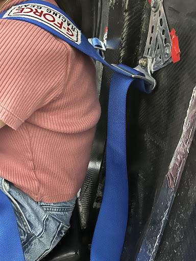
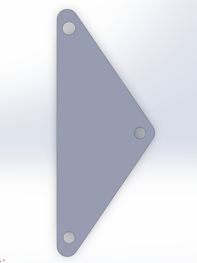
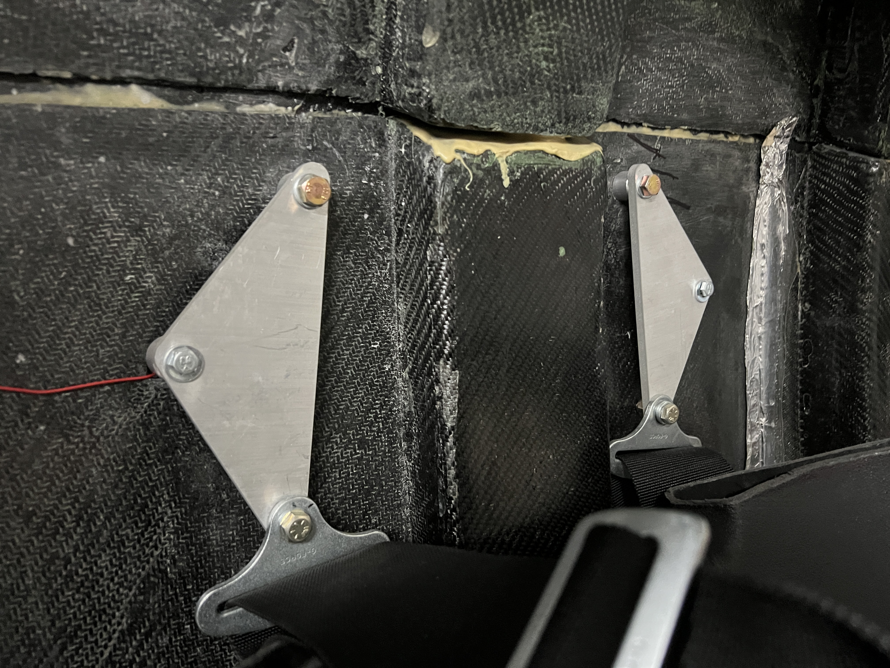

Illini EV Concept is a student-run automotive club at the University of Illinois at Urbana-Champaign, dedicated to advancing electric vehicle technology through research, design, and hands-on manufacturing.

Leadership
Body Sub-Team Co-Lead: As the Body Subteam Co-Lead, I coordinate weekly technical meetings and lead the onboarding and integration of new members to ensure consistent progress on the team's current deliverables. My leadership focuses on guiding my team through hands-on work and fabrication by upkeeping our current car and making progress towards our next generation car. The overall goal is to ensure our car is structurally ready for the Shell Eco-marathon at the Indianapolis Motor Speedway.
Logistics Lead: As Logistics Lead, I managed purchasing and workspace organization for the mechanical subteams. I maintained a safe, organized workspace by conducting tool/material inventories and implementing workspace layout improvements based on team feedback. My primary responsibility was executing purchase orders, where I evaluated vendors to balance tool quality, reputability, and delivery times.
Design & Manufacturing
Waterjet Brackets: I designed two critical structural components in SolidWorks made for waterjet cutting. The first was a group of reinforcement brackets to connect fractured door hinges, allowing the door to be re-attached to the car. The second was a high-strength mounting bracket for the 5-point harness, which secured the seatbelt assembly to the cab to meet the technical inspection standards for the Shell Eco-marathon.
Body Panels: To develop the front section for our next monocoque chassis, I guided my team in using VARTM (Vacuum Assisted Resin Transfer Molding). By working through trial body panels directly on glass and bypassing the need for a complex mold at the moment, we achieved a strong carbon fiber panel for use in our next generation car.

Original Bracket

SolidWorks Design

Final Installed Assembly on the Car